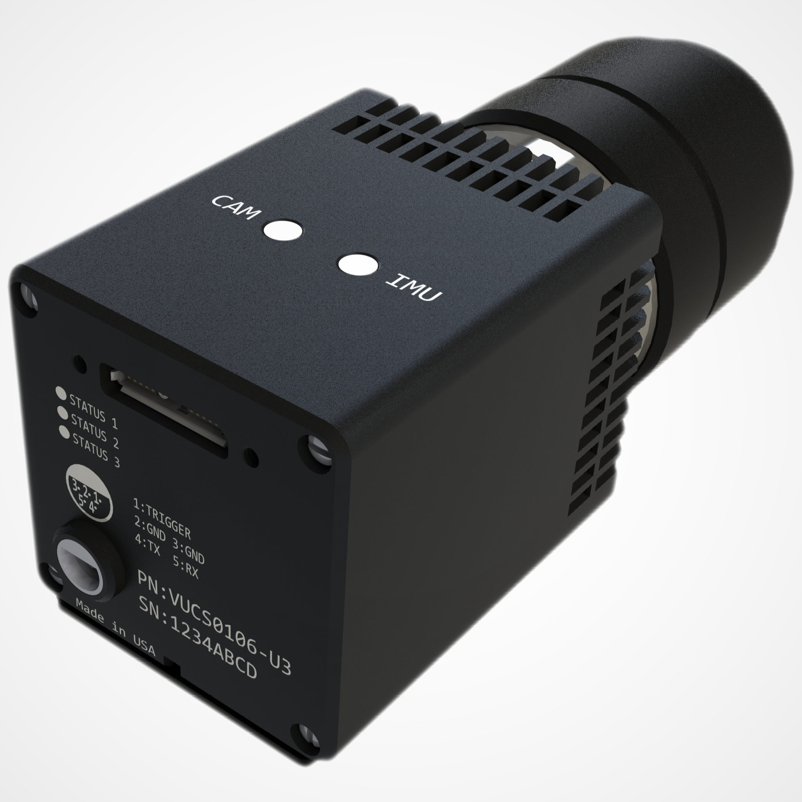
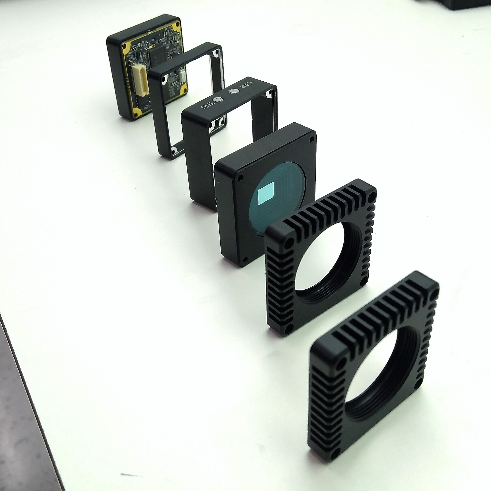
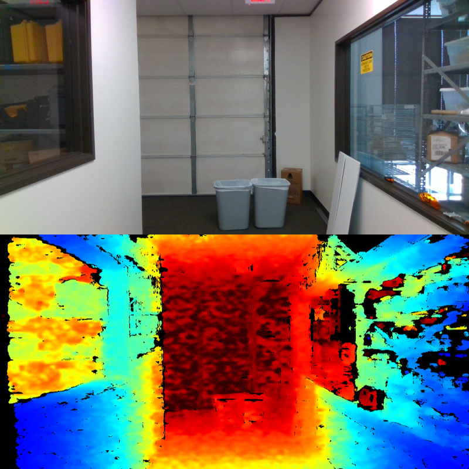
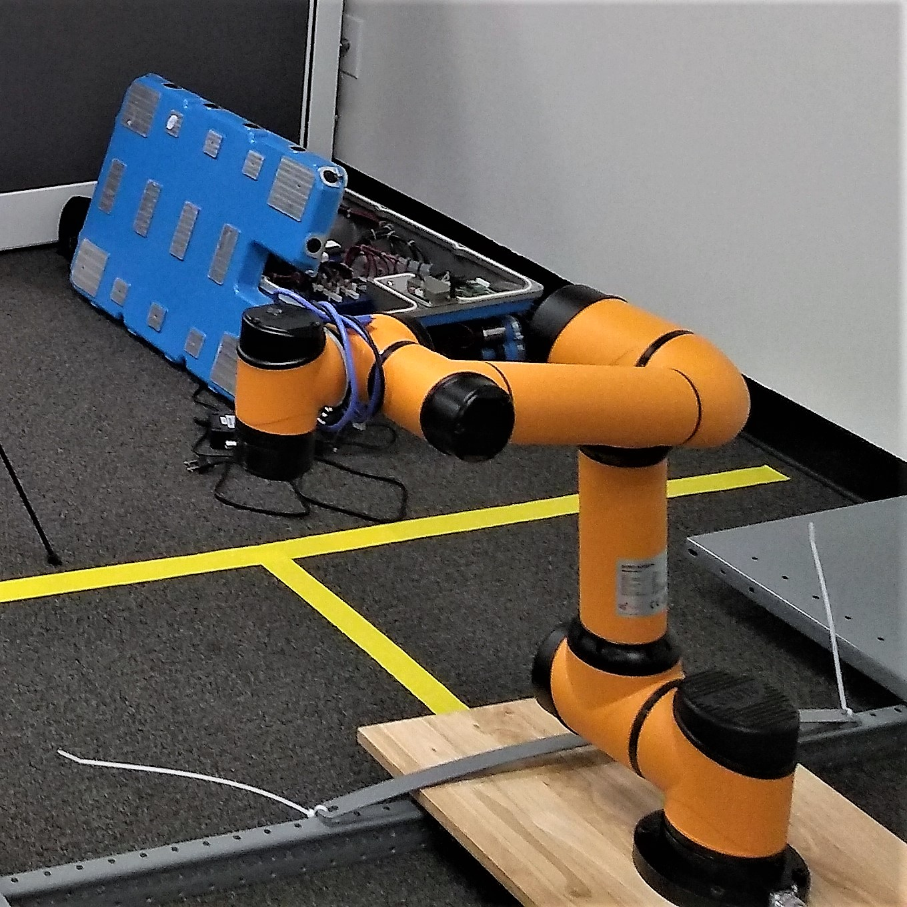

DunAn Precision, Inc. - R&D Division
Mechanical Engineer

I started my position as the principal mechanical engineer at the R&D Division of DunAn Precision, Inc. in April 2018. Even though DunAn Precision, Inc. focuses primarily on the HVAC industry, the R&D Division in Austin, TX developed smart cameras called the Visual Inertial Measurement Unit (VIMU) for industrial robotics and autonomous vehicle applications. In February 2019, the division was dissolved due to funding issues, which also affected many of DunAn's other operations in North America.
Background
My work at the company involves developing a low cost monocular vision inertial measurement unit (VIMU). The development of the VIMU was done with applications in the robotics field in mind, providing visual perception capabilities in addition to motion tracking: autonomous vehicles or drones can use the VIMU for 3-D mapping and obstacle detection, while manufacturing robots can use it for object classification.
Many companies competing to produce computer vision systems that would allow visual simultaneous localization and mapping (VSLAM) have mostly focused on using RADAR-, LiDAR-, or stereovision-based technology for perception, which imposes a steep cost. Employing a monocular system for the 1st generation VIMU kept costs relatively low, but reduced it accuracy. Before the division's dissolution, we planned to introduce a time-of-flight (ToF) sensor into our 2nd generation VIMU to improve its depth perception capabilities for industry-grade applications.
In addition to the camera, the VIMU possesses an accelerometer, a gyroscope, and a magnetometer that combine as an inertial measurement unit (IMU). The IMU provides 9 degrees-of-freedom (DOF) in motion tracking, and by using sensor fusion that data can be integrated with visual data to provide navigation solutions.
My Work and Experience
   As the principal mechanical engineer, I designed the housing for the VIMU with considerations to the manufacturing and assembly process. For example, the blind holes incorporated relief grooves and a stepwise structure was used in place of a smooth slanting surface, while I included locating notches to indicate the orientation of housing. I also incorporated calibration notches on the housing to provide uniformity in calibration and testing across different units. Besides, I designed highly precise test fixtures to calibrate and test the VIMUs. In order to convey the preciseness of the designs in the engineering drawings, geometric dimensioning and tolerancing (GD&T) was used as per the ASME Y14.5-2009 standard, which I was able to actualize perfectly by working closely with local and international manufacturers.
Furthermore, I was responsible for developing mathematical models to characterize and improve the VIMU. I studied and built mathematical models of micro-electro-mechanical system (MEMS) accelerometer and gyroscope in Simulink, in an attempt to simulate the characteristics of the IMU. I also wrote a program to compute the Allan deviation of the IMU output — a noise characterization tool for inertial navigation devices — as well as a program to compensate the cross-axis sensitivity of the IMU, both in MATLAB. Moreover, I researched methods for system identification of the IMU sensors, primarily through MATLAB's System Identification Toolbox (polynomial, transfer function and state space models), but also through academic research (state augmented state-dependent Riccati equation (SDRE), extended Kalman filter (EKF)). I also developed an EKF-based sensor fusion algorithm to study the effects of sensors with different sampling rates and biases (although generally biases can be compensated by performing steady state analysis); the sensor with the lower sampling rate dominates the estimation performance.
For our 2nd generation VIMU, we planned to improve the VIMU by incorporating a ToF-based sensor in addition to the CCD image sensor, which would allow depth perception abilities and thus greatly advance navigation capabilities. To indicate that the ToF technology is a worthy investment (as compared to other technologies for depth perception), I compared a ToF-based camera against a infrared-based (IR-based) camera, namely the Microsoft Kinect versus the Intel RealSense D435. I designed the hardware testing setup as well as software programs to run the experimentation. The programs I wrote in MATLAB included calibration, capturing, processing and analysis capabilities for comparing both computer vision systems.
Last but not least, I initiated multiple robotic systems for assembly and experimentation: I devised the pneumatic setup for the robotic adhesive dispenser used in application of optical filter adhesives on the VIMU, while I learned to operate a robotic ground vehicle and a robotic arm for magnetic field and SLAM experiments respectively. Besides, I gained much experience in testing and experimentation through the formulation of procedures used in rate, temperature, and vibration testing based on MIL and ASTM standards.